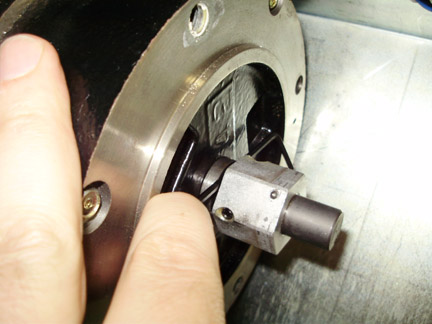

Remove the collar by loosening set screw and sliding the collar off the motor shaft.
Remove the new collar from the new brake assembly and slide it onto the shaft. Loosen the set screw if necessary.
Collar must be positioned 4 mm from the Motor Assembly. Position the collar on the shaft such that a 4 mm hex wrench is snug between the collar and the motor assembly. See Illustration 3. The spacing is from the flat sides of the hex wrench, not the corners so the gap is no more than 4 mm.
Illustration 3: Collar to motor spacing

Leave the 4 mm hex wrench in place when tightening the set screw to maintain spacing.
Tighten the set screw to the following torque value:
Table 1: Set screw torque
| 4.5 N-m | 3.5 lb-ft | 40 lb-in | 46 kg-cm |